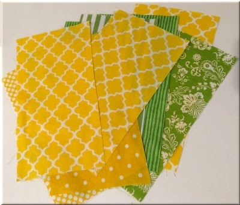

Let's Make a Chicken:

Find fabrics that chicken might dream to look like! I especially like stripes, geometric designs, and polkadots. For each chicken, you will need a rectangle of about 5 1/4 inches (14 cm) by 10 inches (25 cm). Print the pattern from gluesticksblog.com. Note: remember to unselect "fit-to-page" before you print it.
Next, trace and cut out the small pieces from the pattern -- the comb, beak, and wattles. (I've recently learned that a chicken has 2 wattles, not just one, so my chickens need one more.)